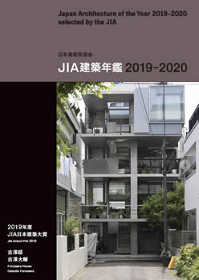
|
|
「JIA建築年鑑15」2019-2020
発行元／
公益社団法人日本建築家協会
制作／建築画報社
日本建築家協会（JIA）より毎年発行される「JIA建築年鑑」シリーズの最新刊。2016～2018年の3年間に竣工した応募作品187点の中から選定された「優秀建築選（100選）」、現地審査、最終審査を経て選定された「JIA日本建築大賞」「JIA優秀建築賞」ほか、現在の建築の潮流がわかる優秀作を豊富な写真、図、データとともに掲載。
サイズ B5 本文360頁
本体価格 2,600円(税別)
ISBN 978-4-903378-29-9 C3002 |
|
|
|
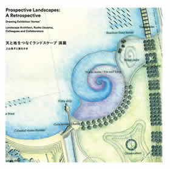
|
|
天と地をつなぐランドスケープ 渦展
編集・著者／
上山良子/ 関和明＋渦なかま
発行元／
NPO法人 建築文化継承機構
制作／建築画報社
子供達にもランドスケープを開いていきたいという想いから絵本のように仕立てた前半は「渦」を探す旅。渦巡りを終えると、「アーカイヴス島」にやってくる。
サイズ 200x200mm 96頁
本体価格 2,500円(税別)
ISBN 978-4-909154-63-7 |
|
|
|
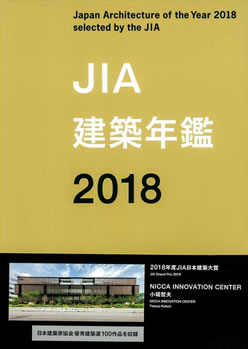
|
|
JIA建築年鑑2018
発行元／
公益社団法人日本建築家協会
制作／建築画報社
日本建築家協会（JIA）より毎年発行されている建築年鑑シリーズの最新刊。直近3年間に竣工した建築作品から審査により選定された優秀作を掲載。巻末には全作品の建築データと登場するすべての建築家プロフィールを付す。現在の建築の潮流がわかる1冊。
サイズ B5 本文360頁
本体価格 2,600円(税別)
ISBN 978-4-903378-24-4 C3002 |
|
|
|
|
|
能舞台 歴史を巡る
写真／森田拾史郎
文／児玉信、池田哲夫（佐渡）
六百五十年の能の歴史とともにある全国の能舞台のなかから、写真家・森田拾史郎が選び撮影した六十舞台を、歴史をひもとく文章とともに巡ります。
サイズ A5 256頁
本体価格 3,500円(税別)
ISBN 978-4-909154-62-0 C3070 |
|
|
|
|
|
JIA建築年鑑2017
発行元／
公益社団法人日本建築家協会
制作／建築画報社 現代日本の建築家⑬
日本建築家協会が発行する建築年鑑シリーズの13冊目。JIA日本建築大賞を受賞した原田真宏・原田麻魚設計の「道の駅ましこ」をはじめ、優秀建築賞を受賞した「コープ共済プラザ」「太子町新庁舎“太子の環”」を含む、2017年度の日本建築家協会優秀建築選100作品を収録。
サイズ B5 本文355頁
本体価格 2,600円(税別)
ISBN 978-4-903378-21-3 |
|
|
|
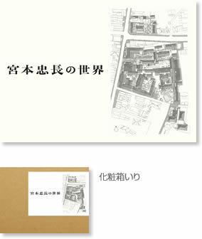
|
|
宮本忠長の世界
宮本忠長建築設計事務所 編・著
「日本の伝統的な和風様式と地域の風土」をテーマに建築活動を続け、故郷・ 長野県を軸として風土に根差した建築物を国内に多数設計した宮本忠長氏の50年間。
サイズ A4変形 128頁
本体価格 3,500円(税別)
ISBN 978-4-909154-61-3 C3052 |
|
|
|
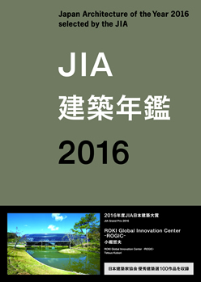
|
|
JIA建築年鑑2016
発行元／
公益社団法人日本建築家協会
制作／建築画報社 現代日本の建築家⑫
日本建築家協会が発行する建築年鑑シリーズの12冊目。JIA日本建築大賞を受賞した小堀哲夫設計の「ROKI Global Innovation Center‐ROGIC‐」をはじめ、優秀建築賞を受賞した「熊本県立熊本かがやきの森支援学校」を含む2016年度の日本建築家協会優秀建築選100作品を収録。
サイズ B5 本文345頁
本体価格 2,600円(税別)
ISBN 978-4-903378-18-3 |
|
|
|
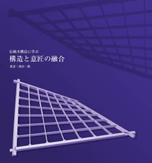構造と意匠の融合" width="150" height="210" />
|
|
伝統木構法に学ぶ
構造と意匠の融合
著者／増田一眞
伝統木工法を継承・発展・創造し続けるために
構造設計家であり、伝統木構造の会会長でもある増田一眞が考える、日本の伝統木構の継承と発展。
サイズ A4変形 128頁
本体価格 2,600円(税別)
ISBN 978-4-901772-95-2 |
|
|
|
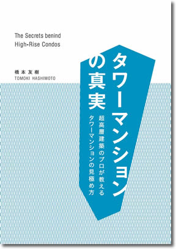
|
|
タワーマンションの真実
著者／橋本友希
今後も増え続けるタワーマンション。
地震に強いタワーマンションとは？施工ミスはなぜ起きるか？など
長年大手デベロッパーに勤めた業界の専門家が隠されるタワーマンションの真実を公開する。
サイズ B6
本体価格 1,500円(税別)
ISBN 978-4-901772-97-6 |
|
|
|
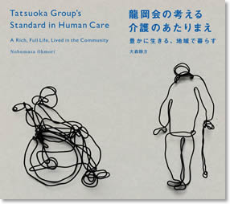
|
|
龍岡会の考える
介護のあたりまえ
豊かに生きる、地域で暮らす
著者／大森順方
デザイン／岩松亮太
取材・編集協力／
殿井悠子（noventa）
医療法人社団 龍岡会の理念
それぞれのゲストにふさわしい十人十色のケアー 心の癒される誠心誠意のケアー いつでも信頼される生涯安心のケアー
（はじめに より）
サイズ B5変形 本文136頁
本体価格 2,400円（税別）
ISBN
978-4-901772-92-1
|
|
|
|
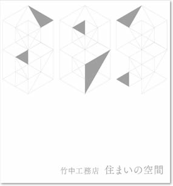
|
|
竹中工務店 住まいの空間
制作／
竹中工務店 住まいの空間」企画・編集Ｗ・Ｇ
竹中工務店の住宅への取り組み
この本は、1973年から2015年まで全国各地に建てられた26の「住まい」をひとつひとつ訪ね歩き、カメラに納め、今現在どのように住まわれているのか、竹中工務店が創造してきた「住まい空間」が何を目指してきたのかを検証する試みだった。（編集後記より）
サイズ A4変形 本文160頁
本体価格 3,000円（税別）
ISBN978-4-901772-93-8 |
|
|
|
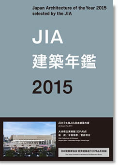
|
|
JIA建築年鑑2015
発行元／
公益社団法人日本建築家協会
制作／建築画報社 現代日本の建築家⑪
日本建築家協会が発行する建築年鑑シリーズの11冊目。
2015年度の日本建築家協会優秀建築選100作品を収録した最新の建築年鑑。現在の建築の潮流がこの1冊でわかります。
サイズ B5 本文346頁
本体価格 2,600円 （税別）
ISBN978-4-903378-16-9 |
|
|
|
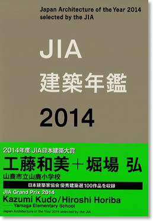
|
|
JIA建築年鑑2014
発行元／
公益社団法人日本建築家協会
制作／建築画報社 現代日本の建築家⑩
日本建築家協会が発行する建築年鑑シリーズの10冊目。
2014年の建築作品の中から、日本建築大賞、日本建築家協会賞、新人賞受賞作品を選出し、優秀建築選100作と併せて掲載。その他、環境建築賞、25年賞の受賞作も収録。
サイズ B5 本文356頁
本体価格 3,619円（税別）
ISBN978-4-903378-13-8 |
|
|
|
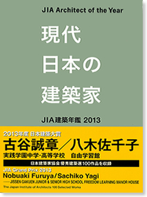
|
|
JIA建築年鑑2013
発行元／
公益社団法人日本建築家協会
制作／建築画報社 現代日本の建築家⑨
日本建築家協会が発行する建築年鑑シリーズの9冊目。
2013年度版「現代日本の建築家」。2013年の建築作品の中から、日本建築大賞、日本建築家協会賞、新人賞受賞作品を選出し、優秀建築選100作と併せて掲載。
サイズ B5 本文347頁
本体価格 3,619円（税別）
ISBN978-4-903378-12-1 |
|
|
|
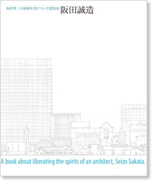
|
|
阪田誠造
坂倉準三の精神を受けついだ建築家
編・著／
阪田誠造
「阪田誠造 坂倉準三の精神を受けついだ建築家」編集委員
貴重なインタビューを収録
坂倉準三歿後、坂倉建築研究所を牽引し続けた建築家「阪田誠造」。阪田氏の業績と人となりを、建築周縁の各方面からの「証言」をもとに描き出した一冊。
サイズ A4変形 本文120頁
本体価格 4,000円（税別）
ISBN978-4-901772-87-7 |
|
|
|
|
|
菊竹学校
伝えたい 建築をつくる心
編・著／「菊竹学校」編集委員会
門下生63名の証言
菊竹清訓建築設計事務所 卒業生が後世に伝える、菊竹清訓氏から教えられた建築をつくる心。
サイズ B5変形 本文304頁
本体価格 3,000円（税別）
ISBN978-4-901772-83-9 |
|
|
|
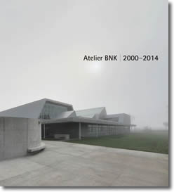
|
|
Atelier BNK 2000-2014
著者／アトリエブンク
「アトリエブンク」近作集
建築とは人と自然の関わり方であるとするなら、北海道では厳しい自然環境を制御するためのシェルターを作ることが建築の重要なテーマである。われわれは、ほとんど手付かずの地表面にどのようにシェルターを置くか、また豊かな四季の変化をどのように取捨するかについて議論する。敷地が小さく限定されていたとしても背後に広がる自然や大地を常にイメージしている。（本文「亜寒帯のシェルター」より）
サイズ A4変形 本文128頁
本体価格 3,000円（税別）
ISBN978-4-901772-78-5 |
|
|
|
|
|
現代の名匠
聞き手／鈴木博之
人気連載を一冊に。
単行本化にあたり、新たに9名を加えた総勢21名のインタビュー本。
各先生の現在に至るまでの道のりを、故 鈴木博之氏の視点から切り込んだ読み応えのある一冊。
建築画報社50周年の記念として出版。
サイズA4 本文300頁
本体価格 3,300円（税別）
ISBN978-4-901772-77-8 |
|
|
|

|
|
継承と挑戦
クライアントアーキテクトの軌跡と奇跡
著者／梅垣春記
私たちの建築は金融商品にあらず
その思いを胸に、相互館110タワー、京橋創生館、梅新第一生命ビルディング、第一生命ホール、豊洲キュービック ガーデンなど、第一生命の「インハウスアーキテクト」として、クライアントの立場から協働者との設計に参画してきた梅垣春記氏。40年間の活動記録をまとめた。
サイズ A4変形 本文120頁
本体価格 2,800円(税別)
ISBN978-4-901772-74-7 |
|
|
|
|
|
建築家 戸尾任宏
日本の心を宿す博物館
建築
著者／戸尾任宏
博物館を中心とする作品集
建築家 戸尾任宏氏（1930-2011）は、40 年間に176 作を設計し、そのうち70 余作が博物館関連施設だった。その博物館建築を中心とした作品を、編集委員会メンバー各氏の寄稿文とともにまとめた。巻末には、1950 年代後半から1960 年代にかけて書かれた戸尾氏によるロマネスク研究論文を一部掲載。
サイズ B5 本文96頁
本体価格 2,400円(税別)
ISBN 978-4-901772-72-3 |
|
|
|
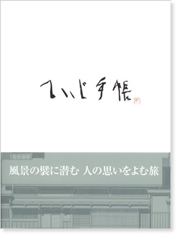風景の襞に潜む 人の思いをよむ旅 " width="150" height="212" />
|
|
ていじ手帳
著者／伊藤ていじ
風景の壁に潜む 人の思いを読む旅
建築史家であり、建築評論家でもあった伊藤ていじ氏（本名：伊藤鄭爾 1922-2010）が、建築画報に寄せた連載「ていじ手帳」全24回（2005-2009）をまとめた一冊。ていじ氏の晩年の思考が、重厚で示唆に富む文章で書き綴られている。
磯崎新氏、二川幸夫氏による特別寄稿に加え、1970年代に伊藤研究室によって行われた倉敷美観地区の調査図面「倉敷川畔伝建」も掲載。
サイズ A4変形 本文216頁
本体価格 3,800円(税別)
ISBN 978-4-901772-69-3 C3052 |
|
|
|
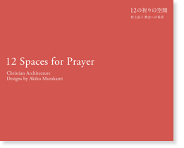
|
|
12の祈りの空間
村上晶子 教会への希求
12 Spaces for Prayer
Christian Architecture
Designs by Akiko Murakami
著者／村上晶子アトリエ
村上晶子アトリエの教会建築
2001年の事務所設立以来10年間にわたる教会建築作品に、坂倉建築研究所時代に担当した作品を加え、美しい写真で紹介。
カトリック大阪大司教 池長潤氏、阪田誠造氏、山口廣氏、湯本長伯氏による寄稿文も掲載。
サイズ B5変形 本文110頁
本体価格 3,000円(税別)
ISBN 978-4-901772-62-4 |
|
|
|
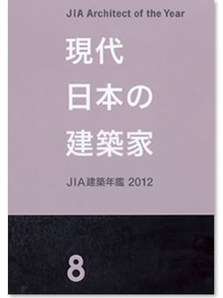
|
|
現代日本の建築家⑧
JIA建築年鑑 2012
発行元／
公益社団法人日本建築家協会
制作／建築画報社 日本建築家協会が発行する建築年鑑シリーズの8冊目
2012年度版「現代日本の建築家」。2012年の建築作品の中から、日本建築大賞、日本建築家協会賞、新人賞受賞作品を選出し、優秀建築選100作と併せて掲載。その他、環境建築賞、25年賞の受賞作も収録。
英文も併記し、より充実した１冊となっている。
サイズ B5 本文340頁
本体価格 3,619円(税別)
ISBN 978-4-903378-11-4 C3002 |
|
|
|
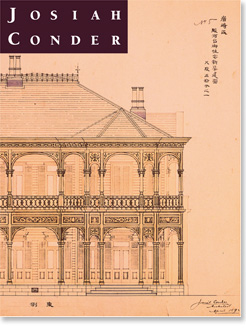
|
|
JOSIAH CONDER
ジョサイア・コンドル
※※ 再入荷 ※※
監修／
鈴木博之、藤森照信、原徳三
監修協力／河東義之、河鍋楠美、増田彰久
日本の近代建築の基礎を築いたジョサイア・コンドル
お雇い外国人として明治10年に来日し、日本の近代建築の基礎を築いたジョサイア・コンドル。 2010年の没後90年を機に、1997年に東京ステーションギャラリーで開催された 『鹿鳴館の建築家 ジョサイア・コンドル展』の図録を増補改訂。
サイズ A4変形 本文272頁
本体価格 3,800円(税別)
ISBN 978-4-901772-48-8 |
|
|
|
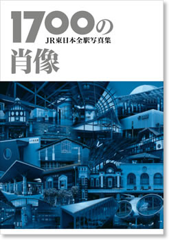
|
|
1700の肖像
JR東日本全駅写真集
発行／
株式会社 ジェイアール東日本建築設計事務所
編集・制作／株式会社 建築画報社 あなたの好きな駅が、きっとある。
明治期の木造駅舎やガラス張りの
現代的な駅、地元の人々に愛されている素朴な駅舎など…JR東日本の全駅1700のカラー写真を収録。写真が語る駅舎建築の「今」。
サイズ A4 本文296頁
本体価格 4,762円(税別)
ISBN978-4-903793-02-3 |
|
|
|
|
|
郵政建築
逓信からの軌跡
監修／日本郵政株式会社
監修協力／鈴木博之
独特のスタイルを誇った郵政建築
日本に近代的郵便制度が誕生すると同時に設置された逓信省の時代から現代へ至るまでの郵政建築の歴史を、多数の図版で俯瞰する大冊。
サイズ 菊判 本文288頁
本体価格 6,000円(税別)
ISBN978-4-901772-43-3 |
|
|
|
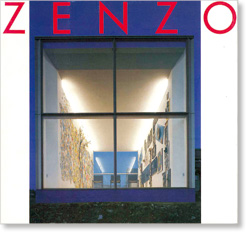
|
|
ZENZO
著者／赤善蔵
アートディレクター／戸田正寿
建築家・写真家 赤善蔵
初の作品集
福井県を中心に活躍する建築家
赤善蔵氏。赤氏が手がけた
建築作品と自分が撮り下ろした地元
三国町の美しい風景写真を多数収録。
サイズ A4変形 本文156頁
本体価格 3,800円(税別)
ISBN4-901772-27-9 |
|
|
|
|
|
皇室建築
内匠寮の人と作品
監修／鈴木博之
監修協力／飯田喜四郎
著者代表／浅羽英男
日本近代建築の黎明期をたどる
明治期から昭和20年にかけて、
皇居、迎賓館赤坂離宮など、数々の
皇室建築を手がけた宮内省内匠寮。
これまであまり知られることのなかった内匠寮の仕事、そしてそこに関わった人物たちを、初公開の貴重な資料を含め、豊富な資料や図版と共に紹介する。
サイズ A4 本文440頁
本体価格 10,000円(税別)
ISBN978-4-901772-21-X |
|
|
|
|
|
「建築画報」40年
監修／鈴木博之
現代建築40年のマトリックス
「建築画報」「VA(Visual Architecture)」305冊の中から、その時代の建築を語る先人達の78編の記事や特集を再録。いま、あらためて日本の現代建築40年を振りかえる。
サイズ B5変形 本文367頁
本体価格 2,000円(税別)
ISBN978-4-901772-00-7 |
|
|
|
| |
|
|
|
宮脇檀 手が考える ～建築家・宮脇檀のドローイング～
著者／
宮脇檀建築研究室・宮脇 彩
発行元／
NPO法人建築文化継承機構
制作／建築画報社
2017年7月14日～23日に建築家会館大ホールにて初回展示された「宮脇檀 手が考える」の図録。原文ままの未完の草稿、31歳で手掛けた「あかりのや」、37歳「さとうボックス」など貴重なスケッチを多数収録。
サイズ 200x200mm 24頁
本体価格 500円(税別) |
|
|
|
|
建築家 宮本忠長展 ～建築家の指先に脳がある～
著者／
宮本忠長建築設計事務所
発行元／
NPO法人建築文化継承機構
制作／建築画報社
2018年７月１日～８日に建築家会館大ホールに於いて初回展示された「建築家 宮本忠長展」の図録。宮本のメモ、絵日誌、長野市庁舎、北斎館、小布施のスケッチなど多数収録。
サイズ 200x200mm 24頁
本体価格 500円(税別) |
|
|
|
|
|
|
|